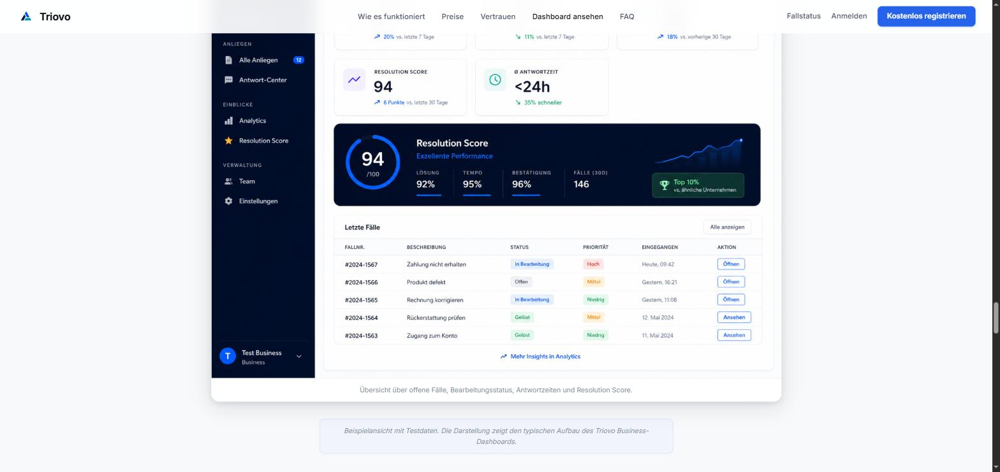

Customer Experience
- Digitale Fall- und Anfrageprozesse
- Service- und Operations-Workflows
- Strukturierte Datenerfassung
- Prozessanalyse und Optimierung
Thevio Systems verbindet Customer Experience, Softwareentwicklung und Automatisierung zu Lösungen für reale Geschäftsprozesse.
Technologie ist bei Thevio Systems immer Mittel zum Zweck: Jede Automatisierung setzt an einem realen Geschäftsproblem an – von eingehenden Daten bis zur vorbereiteten oder automatisierten Bearbeitung.
Jede Lösung von Thevio Systems beginnt mit einem realen Geschäftsproblem oder einem ineffizienten Prozess. Erst danach entscheidet sich, welche Kombination aus Customer Experience, Software Engineering und Business Automation sinnvoll ist.
Datenschutzorientierte Integration, menschliche Freigabe und nachvollziehbare Entscheidungswege werden von Anfang an in die Systemarchitektur einbezogen.
Vier wiederkehrende Ausgangslagen, in denen strukturierte Automatisierung besonders schnell Wirkung zeigt.
Für Teams, deren Prozesse schneller wachsen als ihre internen Systeme. Automatisierung schafft von Anfang an eine Struktur, die mitwächst.
Für Unternehmen mit manuellen Abläufen, Medienbrüchen und wiederkehrenden Verwaltungsaufgaben. Digitale Workflows reduzieren wiederkehrenden manuellen Aufwand.
Für Unternehmen mit hohem Anfragevolumen, Datenflüssen, Systemübergaben und Skalierungsbedarf. Strukturierte Schnittstellen schaffen Übersicht zwischen Systemen.
Für Teams, die Informationen strukturiert erfassen, weiterleiten, auswerten oder automatisiert bearbeiten müssen. Klare Abläufe schaffen Zeit für komplexere Aufgaben.
Triovo ist der praktische Nachweis, dass Thevio Systems reale Geschäftsprobleme in ein vollständiges, produktives Softwaresystem überführt – von der Idee bis zum laufenden Betrieb.
Von der Problemdefinition bis zur nutzbaren Prozessstruktur.
Strukturierte Datenhaltung und Systemanbindung.
Kategorisierung, Priorisierung und vorbereitete Bearbeitung.
Auswertung, Zugriffsschutz und laufender Betrieb.

Beispielansicht mit Testdaten – zeigt den typischen Aufbau des Triovo Business-Dashboards.
Produktkonzept, Problemdefinition, UX- und Prozessstruktur, B2C-Fallerfassung, Business-Dashboard.
Backend-/API-Struktur, Case-Management-Logik, E-Mail-Workflows.
PostgreSQL-Datenmodell, Authentifizierung, E-Mail-Verifikation.
KI-gestützte Triage, Unternehmens- und Lookup-Logik.
Rate-Limiting, XSS-Schutz, Deployment mit Healthcheck, laufende Weiterentwicklung.
Technische Grundlage: Node.js · Express · PostgreSQL · Railway · Cloudflare
Potenzial-Audit für Prozesse, Workflows und Kundenservice
Das Potenzial-Audit zeigt, an welchen Stellen Zeit verloren geht, welche Abläufe automatisierbar sind und welcher Pilotprozess realistisch umgesetzt werden kann.
Hinweis: Bei anschließender Umsetzung kann der Audit-Betrag auf das Projekt angerechnet werden.
Thevio Systems denkt vom Geschäftsproblem her, nicht von der Technologie: Erst wird der reale Prozess verstanden – erst danach entscheidet sich, ob und wie KI, Automatisierung oder individuelle Software sinnvoll eingesetzt werden.
Sebastian Przybyla verantwortet bei Thevio Systems die technische Umsetzung: von der Problemdefinition über die Systemarchitektur bis zur produktiven Weiterentwicklung KI-gestützter Automatisierung und Software.
Lassen Sie uns gemeinsam prüfen, welche Prozesse sich sinnvoll automatisieren lassen und wie ein passendes System aussehen kann.
Projekt oder Prozess besprechen